Density Matrix Renormalization Group
Outline
- Features
- "Standard" RG
- Numerical RG by Wilson
- DMRG by White
- Limitations
Features
- Variational
- No "sign-problem"
- Fast
- Very accurate
Renormalization Group
Core concept: Minimum-length $\Lambda^{-1}$.
$P \propto \exp(-\mathcal{H}(\Lambda)/T)$
$P' = \operatorname{Tr}_{\Lambda \leq k < s\Lambda} P
\propto \exp(-\mathcal{H}(s\Lambda)/T)$
Blocks Renormalization Group

$\mathcal{H}_\mathrm{A} \rightarrow$
$\; \mathcal{H}_\mathrm{AA}$
$\; \mathcal{O}\mathcal{H}_\mathrm{AA}\mathcal{O}^\dagger$
$\mathcal{O}$ is an $m \times \operatorname{dim}\mathcal{H}_\mathrm{AA}$
matrix with $m$ lowest eigenstates of $\mathcal{H}_\mathrm{AA}$.
- AA is a part a bigger system.
- The whole system is in a pure state $|\psi\rangle$.
- $\{|i\rangle\}_{i=1\dots\operatorname{dim}\mathcal{H}_\mathrm{AA}}$
— basis for AA.
- $\{|j\rangle\}$ — basis for the rest of the system.
- $|\psi\rangle = \sum_{i,j}\psi_{i,j}|i\rangle|j\rangle$.
Can we come up with a set $\{|a\rangle\}_{a=1\dots m}$ with
$m < \operatorname{dim}\mathcal{H}_\mathrm{AA}$ such that
$|\psi\rangle \approx \sum_{i,j}\alpha_{a,j}|a\rangle|j\rangle$
?
Answer: Density Matrix!
$\{|a\rangle\}_{a=1\dots m}$ should be the eigenvectors of
$\rho_\mathrm{AA}$ with the largest weights $\{w_a\}$.
$\epsilon = 1 - \sum w_a$ — truncation error.
Finally: DMRG

-
$\mathcal{H}_\mathrm{A}
\rightarrow \mathcal{H}_\mathrm{A\bullet}
\rightarrow \mathcal{H}_\mathrm{A\bullet\bullet A}$.
Diagonalize $\mathcal{H}_\mathrm{A\bullet\bullet A}$ to obtain
$|\psi\rangle$.
-
Construct reduced density matrix $\rho_\mathrm{A\bullet}$
-
Diagonalize $\rho_\mathrm{A\bullet}$ to find largest $m$ eigenvalues $w_a$
and corresponding eigenvectors $|a\rangle$.
- Change the basis and truncate.
DMRG Nowadays
- The best method for low-energy physics in 1D.
- Higher dimensions are very computationally expensive.
- Convergence near critical points is worse.
- Extensions for finite temperatures.
- Extensions for time-dependent Hamiltonians.
To Remember
Minimum-length $\Lambda^{-1}$.
Truncation of Hilbert space.
Density-matrix to minimize the truncation error.